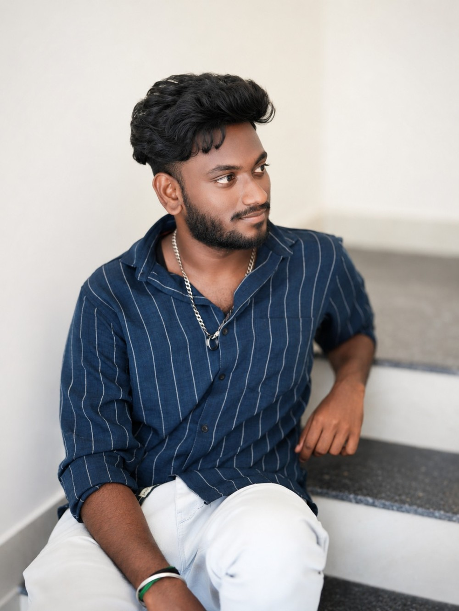

☁️
Azure Infrastructure
Azure services, Azure Arc, Azure Local / Stack HCI, VM deployment and infrastructure operations.
Azure Infrastructure & DevOps Engineer with around 2 years of hands-on experience building, deploying and maintaining infrastructure across Azure, Azure Local / Stack HCI, Linux, containers and CI/CD environments.

I work close to the infrastructure layer — turning physical servers and clustered environments into reliable platforms for applications.
Azure services, Azure Arc, Azure Local / Stack HCI, VM deployment and infrastructure operations.
Linux administration, Windows Server, networking, storage, high availability and troubleshooting.
GitHub Actions, CI/CD, Docker, Kubernetes, shell scripting and infrastructure automation.
A practical stack built around cloud infrastructure, systems and delivery automation.
Hands-on infrastructure work with an emphasis on availability, deployment and operational reliability.
Working with Azure Stack HCI / Azure Local environments, physical server provisioning, Azure Arc onboarding, cluster operations, Linux VM deployment and infrastructure troubleshooting.
Install and configure HCI infrastructure, assign networking, onboard servers to Azure Arc, create and manage clusters, deploy VMs, perform patching and investigate storage, network and platform issues.
Exploring pipeline-driven provisioning, GitHub Actions, Terraform, containerisation and repeatable infrastructure workflows to reduce manual effort.
Selected work themes based on my hands-on Azure infrastructure experience. Client-sensitive details intentionally excluded.
Designed and operated Azure Stack HCI / Azure Local environments: server preparation, IP configuration, Arc onboarding, clustering, storage and VM lifecycle.
Provisioned Ubuntu workloads on clustered infrastructure and supported application-ready environments with networking, storage and operational checks.
Building toward repeatable provisioning with YAML pipelines, GitHub Actions, Terraform and scripting — connecting infrastructure operations with modern delivery practices.
Recognised for contributions to infrastructure operations and maintaining high availability of servers.
Hands-on troubleshooting across storage, networking, clusters, VMs and platform connectivity.
Continuously expanding from infrastructure operations into DevOps, cloud automation and platform engineering.
Open to Azure Cloud, Infrastructure, DevOps and Cloud Operations opportunities.